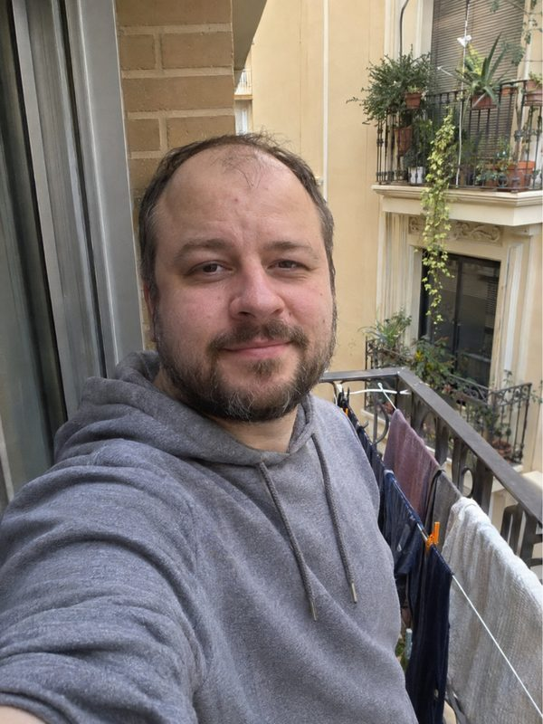
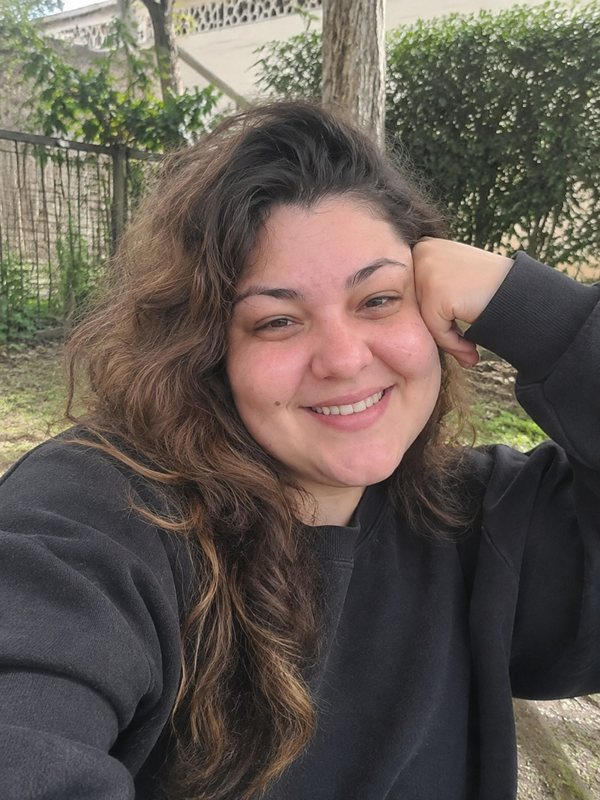

Интервью
Саша, координатор проекта, сам прошел эту процедуру. Он расспросит вас в спокойной обстановке и в вашем темпе. Если станет тяжело, можно сделать перерыв или продолжить в другой день.
Кейс – ваша история преследования с доказательствами, которую вы подаете в полиции Испании. Мы напишем его вместе с вами за 8-10 недель: интервью, текст, доказательства, отчет о стране, перевод и проверка юристом.
Защиту дают не только тем, кого уже задерживали или били. Основанием бывает и обоснованный страх преследования в будущем.
Что из этого есть в вашей истории, разберем на бесплатной оценке шансов. Оценить шансы
Саша, координатор проекта, сам прошел эту процедуру. Он расспросит вас в спокойной обстановке и в вашем темпе. Если станет тяжело, можно сделать перерыв или продолжить в другой день.
Илья Андреев, журналист, делает из расшифровки связную и сильную историю. Он выпускающий редактор и автор книг, больше 4 лет живет в Испании и сам получил защиту. Может задать уточняющие вопросы.
Подскажем, где искать прямые и косвенные доказательства. Добавим отчет о том, как в стране соблюдаются права человека.
Переводим кейс на испанский. Юрист вычитывает финальный текст и обсуждает его с вами на консультации, она входит в стоимость.
PDF до 40 листов А4 с подшитыми доказательствами, готовый к печати или электронной подаче. С ним вы придете на интервью в полиции.
Все четыре шага выше, включая консультацию с юристом по готовому тексту.
Юрист и координатор заранее читают ваш текст. На созвоне на 3 часа разбираем, что усилить и исправить, какие доказательства нужны, а какие нет, и где их искать. Правки вы вносите сами.
Если вы уже были у нас на консультации, ее стоимость вычтем из кейса. Оплата в рублях, евро или USDT.
Историю читает только команда, которая работает с вашим кейсом: координатор, журналист и юрист. Мы не передаем информацию третьим лицам. Кейс подаете вы, и только вы решаете, когда. Общение с нами не нарушает законы России.
Одобрение не может гарантировать никто: решение принимают органы Испании. Мы отвечаем за то, чтобы кейс был подробным, с доказательствами, переведенным и проверенным юристом.До крайнего срока по моему ЛГБТ-кейсу оставался ровно месяц. За этот месяц мы собрали все документы и доказательства. Все успели


Первый созвон с координатором развеял главные сомнения, Валерия вела подачу на визу, юрист вычитал кейс. Визу дали с первого раза. Ценник абсолютно соотносим с пользой
Советы помогли внести правки в кейс и сделать его весомее для миграционного офицера. Я подался на убежище неделю назад и теперь в стране легально


Разобрали все подводные камни, которые могут быть на интервью, и получили ценные правки к кейсу. Общение было приятным и конструктивным
Это реальные люди: отзывы пришли нам после консультаций, работы над кейсом и сопровождения.
Читать все отзывы →
8-10 недель с момента интервью. Время работы над кейсом зависит не только от нас. Мы работаем вместе: вам нужно будет как вычитать материал, так и собрать доказательства.
Время на интервью и быть на связи, когда журналист задаст уточняющие вопросы. И, конечно, собрать доказательства: что именно и где искать, подскажем.
Это нормально, многим бывает тяжело. В переписке и для оценки шансов подробности и тем более ваши персональные данные не нужны: достаточно пары слов о том, что происходило. Историю мы записываем на интервью с координатором проекта, в спокойной обстановке и в вашем темпе. Если станет тяжело, можно сделать перерыв или продолжить в другой день.
Доказательства бывают прямые и косвенные, а отчет о стране показывает, что происходит с людьми в вашей ситуации. Что можно собрать именно вам, разберем при работе над кейсом – для каждого заявителя мы готовим персональный гайд по сбору доказательств, основанный на его или ее истории.
Нет. Кейса должно быть два: у каждого из вас свои причины просить защиту, а в Испании ваши дела объединят. Но при покупке двух кейсов вы получаете скидку 15% для второго человека. Точную стоимость назовем после заявки: она зависит от срока и других условий.
Дорабатывать чужие тексты мы не беремся. Если текст готов, разберем его на консультации по кейсу. Если текст нужно писать заново, предложим работу с нами.
Консультации стоят от 50 €. Работа над кейсом начинается от 250 €. Стоимость сопровождения мы рассчитываем индивидуально, она зависит от набора услуг – тарифы с шенгенской визой и ситой стоят дороже, но при работе в паре мы предлагаем скидку до 20%.
Гарантировать одобрение не может никто: решение принимает испанское министерство, и каждый случай рассматривают отдельно. Если кто-то обещает «100% вероятность одобрения» – вас обманывают.
Мы гарантируем свою работу: все, что входит в договор, будет сделано. Кейс будет подробным, с доказательствами, переведенным и проверенным юристом, а вы не останетесь с процессом одни.
В команде 11 человек, из них до шести участвуют в сопровождении. Менеджер проекта ведет сопровождение целиком: план, сроки и решения на каждом этапе. Координаторка на связи с вами ежедневно: отвечает на вопросы, напоминает о следующих шагах и собирает документы. Визовый агент помогает с визой, билетами и записью на подачу. Журналист вместе с вами записывает вашу историю и готовит инструкцию по сбору доказательств. Юрист проверяет кейс и готовит вас к интервью. Подробнее – на странице О нас.
Только люди из команды, которые работают над вашим кейсом: координатор проекта, журналист и юрист. Другим людям и организациям мы ваши данные не передаем, а в отзывах и примерах не публикуем ничего без вашего согласия. Испанские власти получат кейс, когда вы сами решите его подать. Как мы храним данные – в Политике конфиденциальности.
Да, работаем по договору: в нем цена, этапы и что делать, если вы решите остановиться. Платить можно в рублях, евро или USDT. Работа над кейсом и сопровождение оплачиваются в два этапа. Обсудить детали и попросить шаблон договора можно у менеджера.
Да, мы помогаем и парам, и семьям. При оплате сопровождения в паре за второго человека скидка 15%. Партнер может как быть заявителем, так им и не быть. С детьми ситуация индивидуальная, такие случаи разбираем на консультации.
С животными можно переезжать, но нельзя подаваться в аэропорту и попасть в государственную программу помощи: с питомцем подаются уже в городе, в полиции, и живут за свой счет.
Не нашли ответ? Спросите в боте →
Расскажите, где вы сейчас и что вас интересует.
На бесплатной оценке шансов скажем, подходит ли
вам международная защита и с чего начать.
Общение с нами не нарушает законы РФ. Мы не передаем данные третьим лицам.